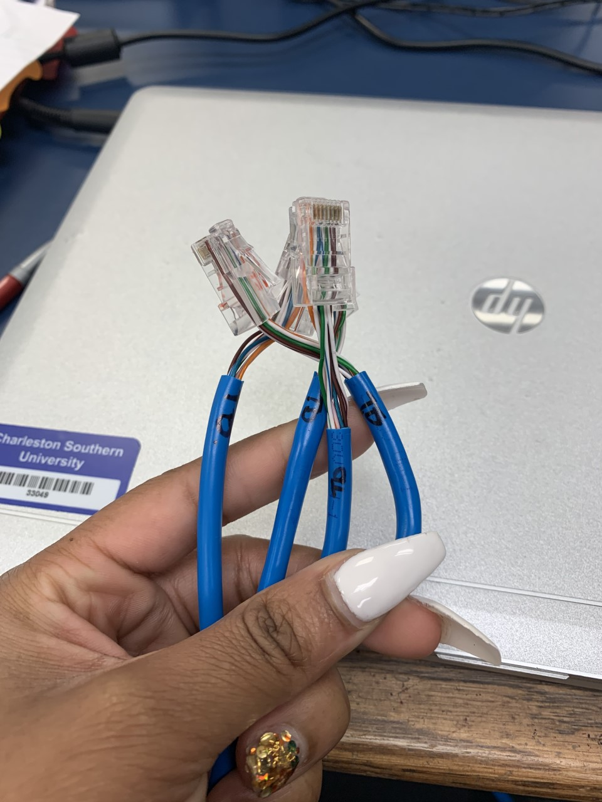
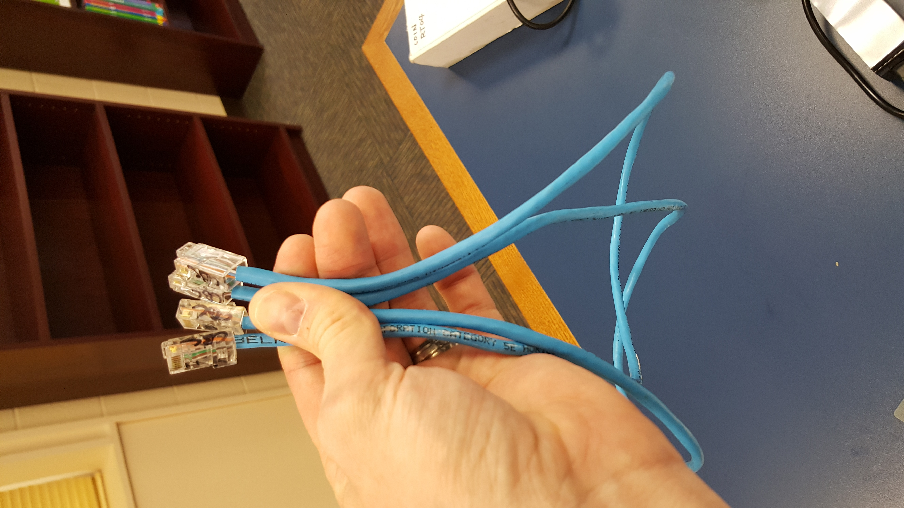

| Cable 1 | Cable 2 | Cable 3 | Cable 4 | |
|---|---|---|---|---|
| Orientation | Orange/White | Orange/White | Brown/White | Brown/White |
| Orange | Orange | Brown | Brown | |
| Blue/White | Blue/White | Green/White | Green/White | |
| Blue | Blue | Green | Green | |
| Green/White | Green/White | Blue/White | Blue/White | |
| Green | Green | Blue | Blue | |
| Brown/White | Brown/White | Orange/White | Orange/White | |
| Brown | Brown | Orange | Orange | |
| Crossover | Orange/White | Blue/White | Brown/White | Brown/White |
| Orange | Green/White | Brown | Brown | |
| Blue/White | Orange/White | Green/White | Brown/White | |
| Blue | Blue | Green | Green | |
| Green/White | Orange | Blue/White | Blue/White | |
| Green | Green | Blue | Brown | |
| Brown/White | Brown/White | Orange/White | Orange/White | |
| Brown | Brown | Orange | Orange |
 
| Performance Results | |
|---|---|
| Data Rate | 10 to 1000 Mbps |
- Data Rates:
- Twisted cable data rates range from 10Mbps to 10Gps.
- Fiber optic cables data rates frange from 51.8 Mbps to 39.8 Mbps.
- Cost:
- Twisted cables are the cheapeast in the category.
- Fiber optics themselves are not expensive; the optical devices on the ends are the expensive part of this medium.
- Reliability:
- Twisted cables are the "dominant solution for high-speed LAN networking (Kurose 19).
- Fiber optic cables are amazing long distances due to their high emi-resistance.
- Network Utilization:
- Twisted cables are mostly used in LAN networks.
- Coaxial cables are used in networks.
- Fiber optic cables are mostly used in networks.